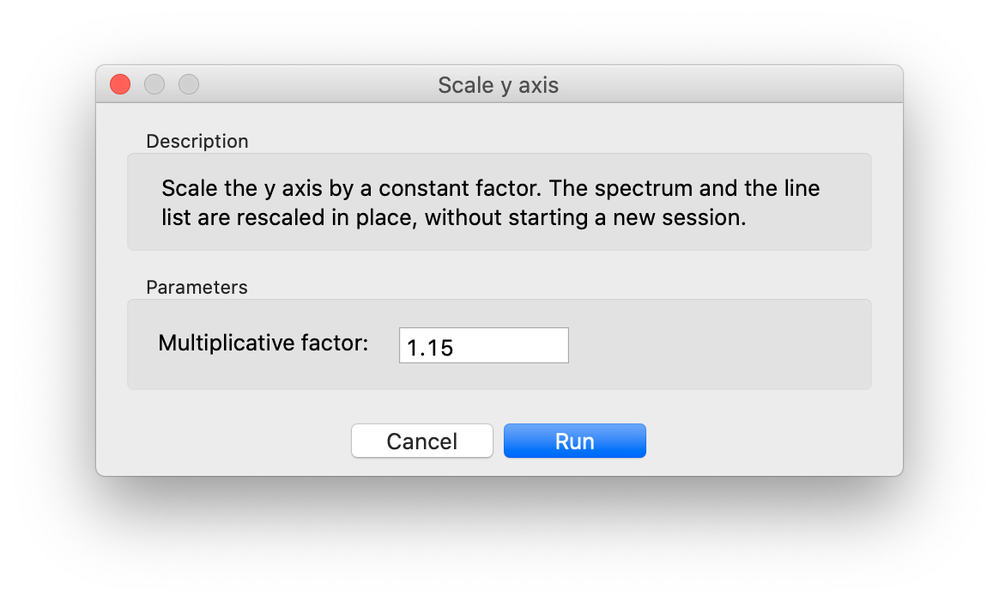

Merging spectra
Table of contents
Merging is what you do to combine two or more spectra into a single one. In this tutorial, you will learn how to merge two spectra with different wavelength range, like those obtained from different arms of the same instrument (in our case, UVB and VIS arm of VLT X-shooter). The same procedure can be applied to the case of several spectra with the same wavelength range.
We assume that the spectra have already been loaded in Astrocook:

Rescale the spectra
This procedure can be executed automatically with $ python ac_gui.py rescale.json in the test/ directory. |
The first step is to rescale the spectra to the same flux level, to correct for inaccuracies in flux calibration. To display both spectra in the main graph, select the second one and choose View > Edit graph elements, then modify the text in the box as follows (for more details on how to edit the graph elements, see Visualization):

Clicking on Apply and zooming into the plot, you will see that in the UVB/VIS superposition region the flux is slightly mismatched:

To rescale the NIR spectra to the VIS one, select it on the main window and choose Edit > Scale y axis.... In the dialog window, insert a suitable multiplicative factor and click on Run:

Selecting both spectra and zooming again, you can check that they are now matching:

You may need to rescale a spectrum several times to find a good matching.
❗️ Please note that the spectra are rescaled in place, without starting a new session. To undo a rescaling, you need to rescale the spectrum again with an inverse factor.
Equalize the spectra
Two spectra can also be rescaled automatically. In the main window, select the two sessions and choose Edit > Equalize sessions.... You will be asked to define a spectral region to be used as reference:

On Run, the recipe will compute the median fluxes of the two spectra in the reference region, and use their ratio to equalize them. By default, the spectrum of the last-selected region is rescaled to the other one.
❗️ Equalization can be performed only on two sessions at a time.
Combine the spectra
Once spectra are rescaled, you need to create a combined session out of the individual ones. In the main window, select both sessions and choose Edit > Combine sessions.... You will be asked for a name for the combination:

The asterisk will be replaced by a concatenation of the selected names (qso_NIR_qso_VIS in this case). You can alternatively define a different name.
On Run, a new session will be created:

The spectrum of this new session contains all the entries of the combined spectra. This means that the pixels of the combined spectrum may overlap with each other (as they keep their original size, defined by xmin and xmax in the spectrum table).
The same method can be used to combine more than two spectra.
❗️ When sessions are combined, the data structures associated with the spectrum (line lists and system lists) are merged.
Rebin the combined spectrum
It is generally useful to rebin the combined spectrum into a new wavelength grid, to avoid dealing with overlapping pixels. This is done by selecting the combined session in the main window and choosing Recipes > Rebin spectrum.... You will be asked to provide a step in x and a unit of wavelength or velocity for the output spectrum:

In this case, the spectrum will be rebinned into a grid with a fixed step of 10 km/s. The grid is designed to cover the whole wavelength range of the input spectrum. The rebinned spectrum will appear on the plot after completion:

❗️ Rebinning may take a long time if the grid is fine and/or the wavelength range is wide.
You can rebin any spectrum in any session using the same procedure.
❗️ Please remember that the rebinning procedure interferes with the statistics of your data, as it introduces correlation among adjacent pixels. If accurate flux statistics is required, please avoid rebinning your spectra when it is not absolutely necessary.